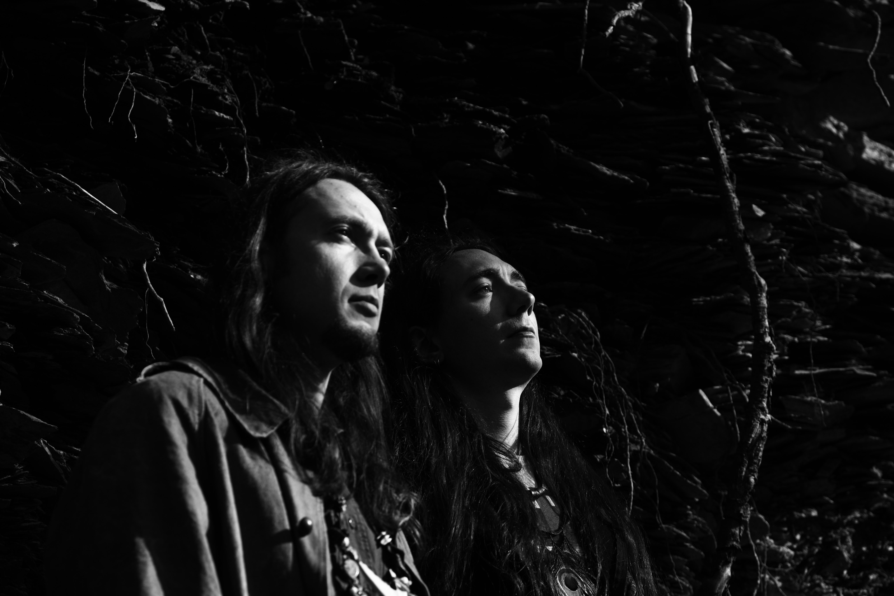

All about Alcest
Welcome to the Alcest Fan Community—a dedicated space for fans to gather, share, and connect. Here, you can
tell your stories about how Alcest's music has touched your life, share personal experiences or encounters
with the band, and celebrate their artistry through original fan art. Our goal is to build a strong, vibrant
community that not only unites us in our love for Alcest but also catches the attention of the band,
encouraging them to tour the U.S.A. more frequently. Together, we can organize and promote community events,
fostering a shared passion that transcends borders.